Chapter 7 Basic Visualization
It’s impossible to overstate the importance of visualization in data analysis.
- Helps us explore data
- Suggest a model
- Assess the validity of a model and its parameters
- Vital for a non-technical audience
7.0.1 Visualization in R
4 plotting engines (at least)
- base plotting system
- lattice
- ggplot2
- rCharts
We’ll look at the base plotting system now and ggplot2 after lunch.
7.0.2 Common geometric objects
- scatter
- line
- hist
- density
- boxplot
- barplot
- dotplot
plot is the most basic graphics command. There are several dozen options that you can set. Spend a lot of time reading the documentation and experimenting.
Open your first script.
7.0.3 A basic scatter plot
source("./scripts/BasicScript.R")
plot(X1, Y, pch=19)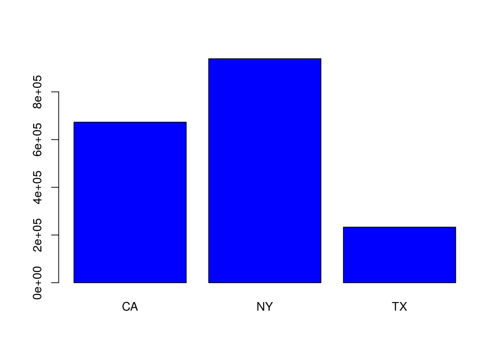
7.0.4 Add lines
The functions ‘lines’ and ‘points’ will add (wait for it) lines and points to a pre-existing plot.
plot(X1, Y, pch=19)
lines(X1, yHat)
7.0.5 Histogram
hist(e)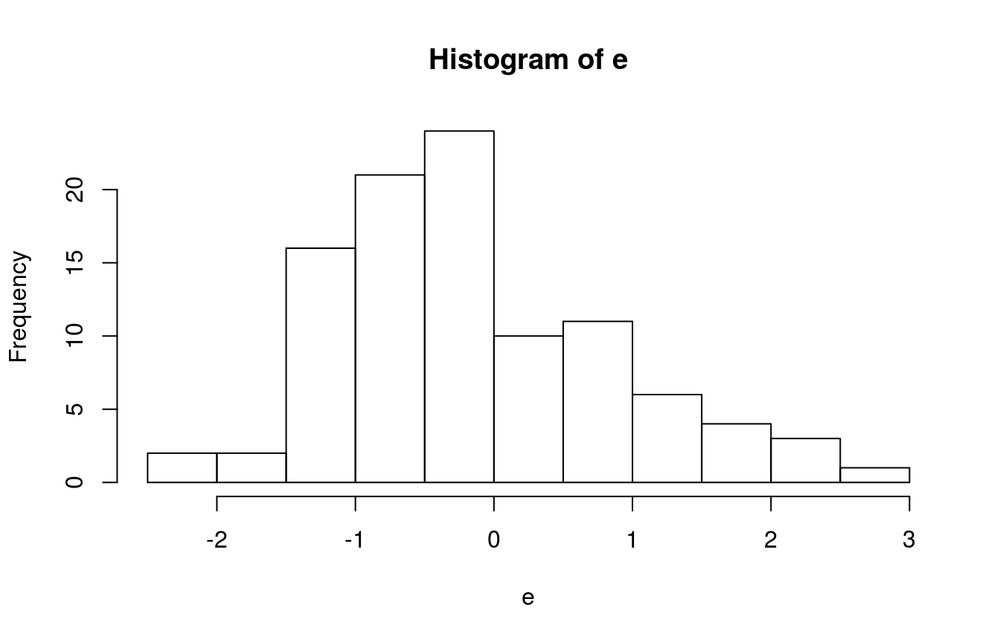
7.0.6 Density plot
plot(density(e))
7.0.7 Boxplot
boxplot(e, pch=19)
7.0.8 Plotting a formula
plot(Y ~ X1, pch=19)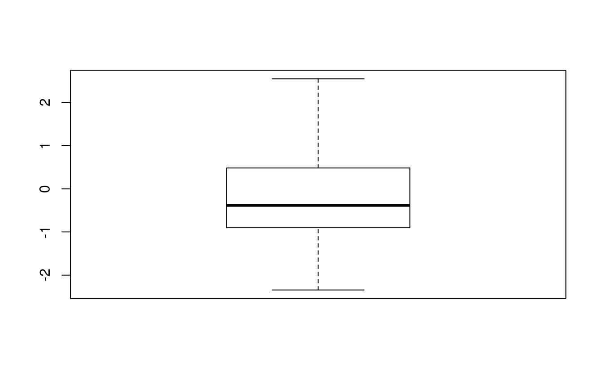
7.0.9 Emphasizing outliers
colors = ifelse(abs(e) > 1.0, "red", "black")
plot(Y ~ X1, pch=19, col=colors)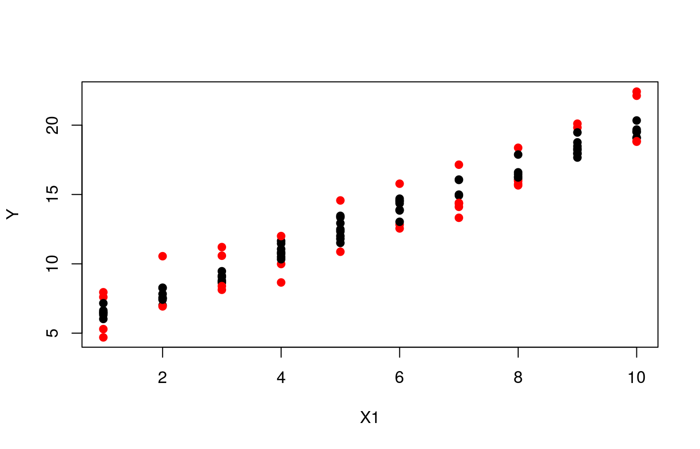
7.0.10 Other ways to emphasize outliers
plot(Y ~ X1, pch=19)
lines(X1, yHat, lwd=2)
lines(X1, yHat+1, lty="dotted", lwd=0.5)
lines(X1, yHat-1, lty="dotted", lwd=0.5)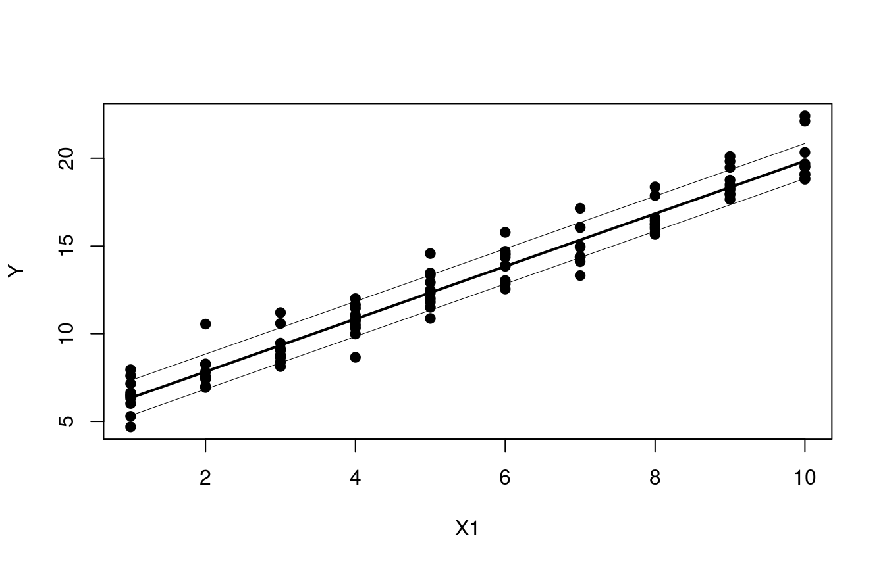
7.1 Exercise
- Load the COTOR2 data from the raw package.
- Create a histogram, kernel density plot and box plot for the claims data
7.2 Answer
library(raw)
data(COTOR2)
hist(COTOR2)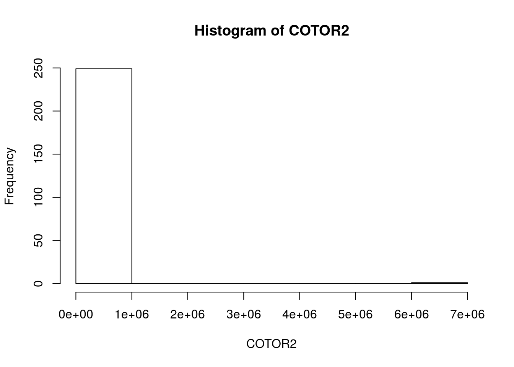
boxplot(COTOR2)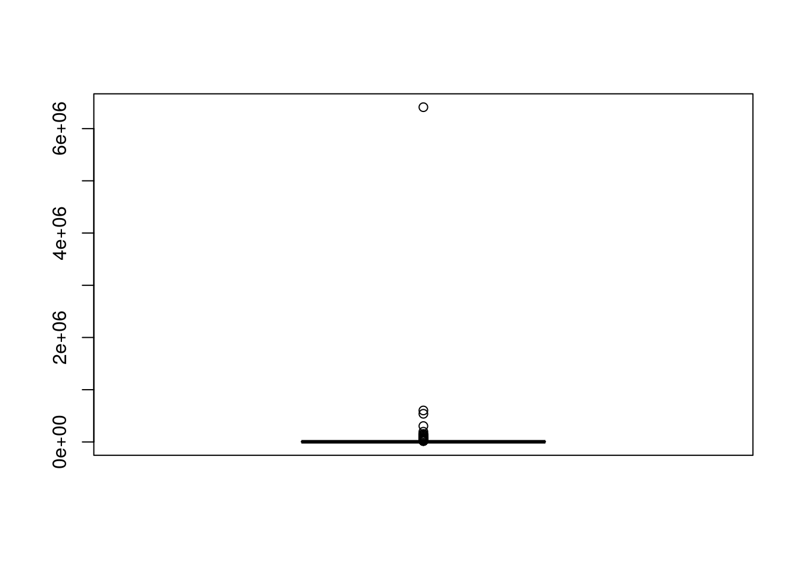
plot(density(COTOR2))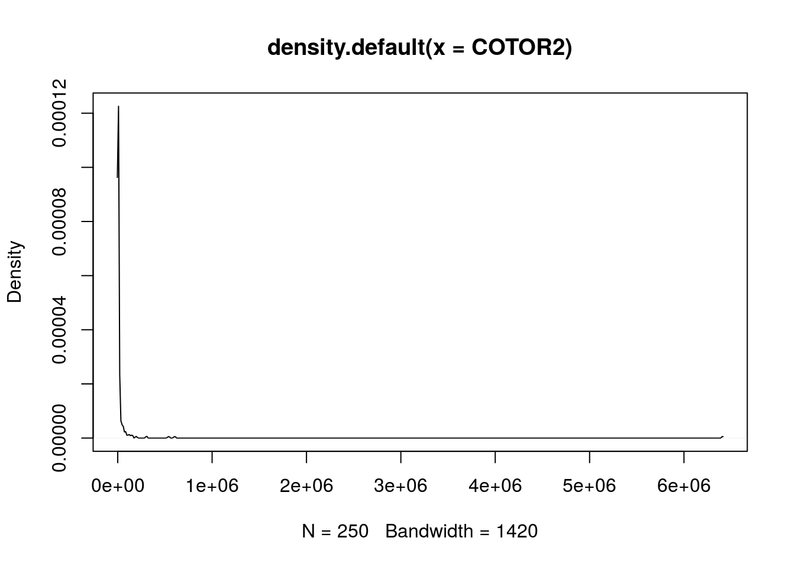
plot(density(log(COTOR2)))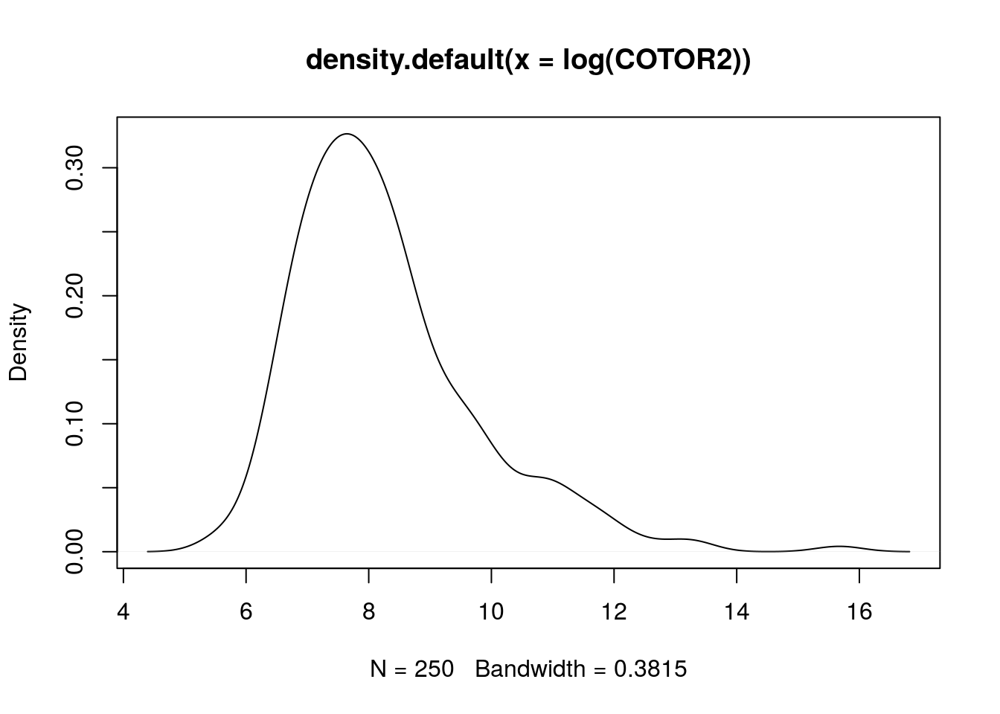
hist(log(COTOR2))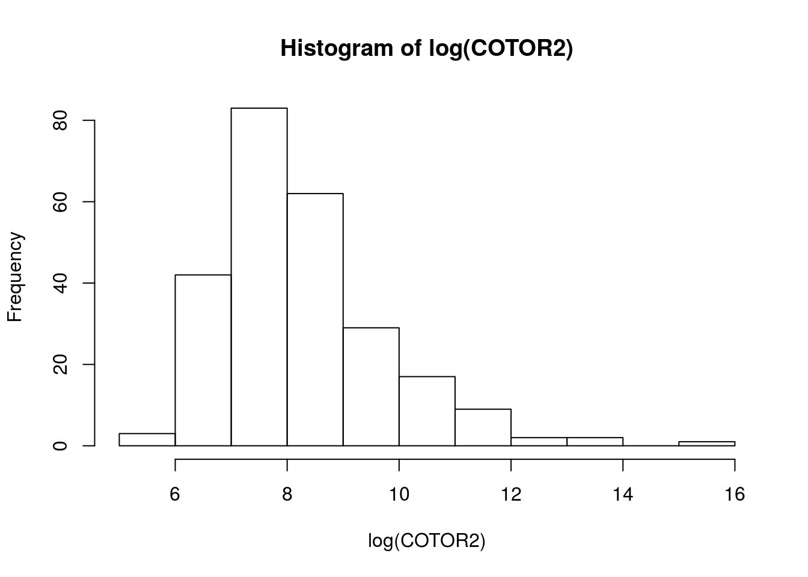
hist(COTOR2, breaks=80)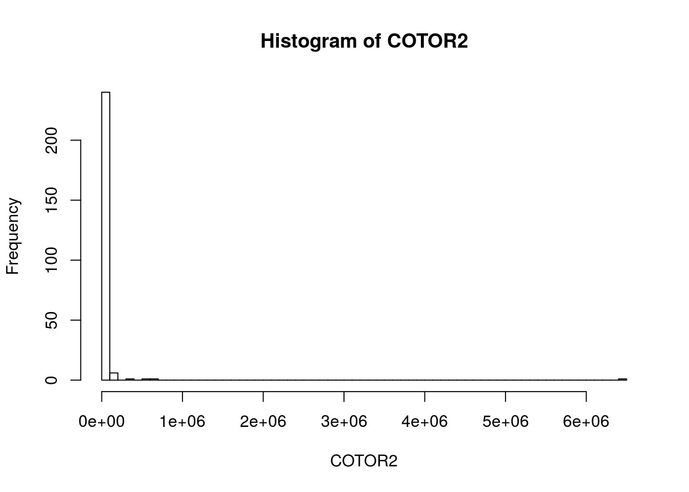